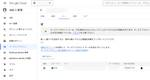
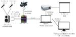

エキサイト TechBlog.
https://tech.excite.co.jp/
エキサイト TechBlog.
フィード
Metabaseをコンテナで立ち上げてみた
エキサイト TechBlog.
こんにちは。 エキサイト株式会社の三浦です。 今回は、Metabaseをコンテナで立ち上げてみた話をしていきます。 Metabaseとは コンテナで立ち上げる 最後に 参考 Metabaseとは MetabaseはBIツールの一つで、社内のデータを可視化するのに役立ちます。 www.metabase.com Dockerを使って簡単に起動できる 様々なデータソースと接続できる など、使いやすいツールです。 今回はこのMetabaseを、実際にコンテナで立ち上げてみます。 コンテナで立ち上げる それでは、実際に立ち上げてみます。 とは言っても、 docker compose を使えば以下の設定だ…
2日前
SpringBoot3 x Thymeleaf で標準のレイアウトを使用する
エキサイト TechBlog.
エキサイト株式会社メディア事業部エンジニアの佐々木です。SpringBoot3でMPAアプリケーションを開発する場合に、Thymeleafテンプレートを使用することは、ほぼデファクトになるかと思います。今回はThymeleafのフラグメントを使用した簡単なレイアウトファイルの作成をご紹介します。 前提 $ java --version openjdk 21.0.2 2024-01-16 LTS OpenJDK Runtime Environment Corretto-21.0.2.13.1 (build 21.0.2+13-LTS) OpenJDK 64-Bit Server VM Corre…
5日前

OpenAPI Generatorを利用して自動生成したJavaのAPIクライアントをローカルリポジトリに保存する
エキサイト TechBlog.
こんにちは、エキサイト株式会社の平石です。 今回は、OpenAPI Generatorを利用して自動生成したJavaのAPIクライアントを独自のローカルリポジトリに保存する方法をご紹介します。 なお、今回の方法は例として「OpenAPI Generatorを利用して自動生成したJavaのAPIクライアント」を挙げているだけで、それ以外の自作のライブラリ等でも利用できます。 はじめに OpenAPI Generatorを利用してJavaのAPIクライアントを自動生成する基礎については、以下のブログ記事でまとめていますので、こちらをご覧ください。 tech.excite.co.jp 実際のサーバー…
6日前
LEFT JOINでハマった話
エキサイト TechBlog.
こんにちは、エキサイト株式会社の平石です。 今回は、初歩的な内容でありながら、SQLでLEFT JOINを利用した際にハマったことを記事にしたいと思います。 なお、本ブログのSQLはMySQL 8.2で動作確認をしています。 例 以下のような3つのテーブルがあるとします。 sample_userテーブル・・・ユーザーIDとユーザ名を管理 prefectureテーブル・・・都道府県IDと都道府県名を管理 user_prefectureテーブル・・・ユーザーの居住する都道府県を管理 そして、これらのテーブルにはそれぞれ以下のようなレコードが入っているものとします。 sample_userテーブル …
6日前

PHP アプリケーションの FCM HTTP v1 API 移行手順
エキサイト TechBlog.
エキサイト株式会社の@mthiroshiです。 アプリのプッシュ通知は、Firebase Cloud Messaging を用いて実装できます。サーバー環境から FCM 実装でプッシュ通知を送る方法の一つとして、FCM HTTP API があります。現在、FCM HTTP API は、新しいAPIへの移行のアナウンスがされています。2024年6月にはレガシーAPIが利用できなくなります。 firebase.google.com 今回は、PHP の実装における FCM HTTP API v1 への移行について紹介します。 公式の移行ガイドによると、主な変更点は下記の3点です。 エンドポイントの変…
9日前
Amazon Aurora MySQLの証明書を更新した話
エキサイト TechBlog.
こんにちは。 エキサイト株式会社の三浦です。 AWSのAurora MySQLにはサーバー証明書が組み込まれていますが、以前デフォルトとして設定されていた rds-ca-2019 がもうすぐ有効期限を迎えます。 今回は、この証明書を更新した話をしていきます。 準備 アプリケーションコードで検証のために証明書を使っていないか 証明書更新時、DBの再起動が必要かどうか 証明書更新実行 証明書の更新はインスタンス単位 最後に 準備 実際に更新する前に、まず以下の2点を確認しました。 アプリケーションコードで検証のために証明書を使っていないか アプリケーションコードからDBに接続する際、アプリケーショ…
9日前
Spring Bootで@CacheEvictを使ってキャッシュを削除する
エキサイト TechBlog.
こんにちは、エキサイト株式会社の平石です。 今回は、Spring Bootで一度作成したキャッシュをTTLが過ぎる前に明示的に削除する方法をご紹介します。 キャッシュを削除したいとき キャッシュという仕組みでは、DBなどの情報源にアクセスした結果を高速にアクセスできる領域に保存しておきます。 そして、同じアクセスが来たときにもう一度情報源に問い合わせるのではなく、結果を保存した領域からデータを取得します。 このようにすることで、情報源の負荷を軽減したり、レスポンスを高速にしたりすることができます。 便利な仕組みですが、DB等内の情報が更新されてもキャッシュが削除されるまでは同じデータを返し続け…
9日前
SpringdocでAPIの情報を補足する際、リクエストパラメータには@Parameterを使うべきという話
エキサイト TechBlog.
こんにちは、エキサイト株式会社の平石です。 今回は、SpringdocでAPIのリクエストに対して、付与するアノテーションをご紹介します。 なお、今回のソースコードは以下の環境で動作確認をしています。 'org.springdoc:springdoc-openapi-starter-webmvc-ui:2.3.0' Java 21 SpringBoot 3.2.2 はじめに SpringdocはOpenAPI仕様のAPIドキュメントを自動で生成してくれるライブラリです。 ドキュメントを書く手間も省けますし、Swagger UIを利用すればAPIの動作確認もできるので、事業部でも積極的に活用して…
9日前

社内カンファレンス「TechCon2024」の裏側！ハイブリット開催の配信設定について 1
1
エキサイト TechBlog.
こんにちは。エキサイト株式会社の Hiroshi Sakai です。 2024年も無事TechConが開催されました！開催にあたっての記事は以下をご覧ください。 tech.excite.co.jp このブログでは、TechCon2024で初めて行われたオフライン、オンラインのハイブリット開催の配信設定について記載します。 専門的な機材や配信を本業とされている方と同じような機材を利用したわけではないので、様々な方が真似できるような構成になっているかと思います。 ハイブリット開催の参考になったら幸いです。 機材配置、配線等について 配信PC (OBS, Zoom, meet)について スピーカー、…
13日前
PHPerKaigi 2024 ルーキーズLT大会枠で登壇するまで
エキサイト TechBlog.
概要 こんにちは、エキサイト株式会社のまみです。(Xのリンク貼りたいがために挨拶しました) PHPerKaigi 2024 のルーキーズLT大会枠で登壇しました :) 登壇するまでの日記？記録？を書きます。 「社外での発表」は私にとっては挑戦でした。同じようにちょっと新しいことをしたいと思っている人の後押しになれたらうれしいです。 今回の私のプロポーザルの書き方を解説しています。プロポーザル書いたことないようという方の参考になったらうれしいです。 登壇するまでの記録 何か新しいことをしたいと思う 新卒でエキサイト株式会社に入社して6年目、 コーディングもそこそこにはできるようになっていて、周囲…
13日前
PHPerKaigi 2024に参加&登壇してきました
エキサイト TechBlog.
こんにちは！エキサイト株式会社のまさきちです。 先日、PHPerKaigi2024に参加&登壇してきました。 「ブログを書くまでがPHPerkaigi」 という事でさっそく書いていきます。 PHPerKaigi2024とは 2024年3月7日（木）〜3月9日（土）の間で開催された国内最大級のPHPカンファレンスです。 エキサイトはスポンサーとして参加しました。 参加者も多く、ノベルティや企画もかなり充実して参加者が楽しめる工夫がされていました。 phperkaigi.jp 私は「ルーキーズLT」という初めてPHPerkaigiで登壇する人の枠で登壇してきました。 弊社から2名ルーキーズLT登壇…
14日前

Aurora MySQLを2系から3系に上げる際の懸念点
エキサイト TechBlog.
こんにちは。 エキサイト株式会社の三浦です。 AWSのAurora MySQL 2（MySQL 5.7互換）は、2024年10月31日で標準サポートが終了します。 docs.aws.amazon.com 一応料金を支払えばサポートは延長できますが、このタイミングでAurora MySQL 3（MySQL 8互換）へのバージョンアップを考えている方も多いのではないでしょうか。 今回は、バージョンアップに際して考えるべきことをまとめます。 なお、今回説明する内容はまだ考察段階であり、実際のアップデートの適用前です。 あくまで参考として見ていただけると幸いです。 アップデート前 SQLやデータ構造が…
16日前
【社内カンファレンス登壇記】TechCon2024でFigma Variantsのお話をしました！
エキサイト TechBlog.
こんにちは。 エキサイトで内定者アルバイトとしてデザイナーをしている齋藤です。 2024年2月16日に行われた、技術者向けの社内カンファレンス「Excite × iXIT TechCon」のLT枠で登壇させていただきましたので、その体験談を記したいと思います。 発表したこと 登壇に際し心がけたこと いきなりVariantsの説明に入らない Variantsを触ったことがない方でもイメージしやすくする 聞き手の属性に合わせた＋αのコンテンツを盛り込む 登壇を終えて 発表したこと 私は『チーム内のUIデザインのコミュニケーションを円滑にするFigmaの機能「Variants」をおさらい！』と称し、…
16日前
【インターン体験記】UIの修正・改善提案で学んだこと
エキサイト TechBlog.
こんにちは！エキサイトインターン生のやのふきです。 この記事では、エキサイトでの就業型インターン中に担当した業務とそこから得た学びを紹介します。 自己紹介 担当した業務内容 メッセージ機能のレイアウト修正 部門別分析のアラート設定に関するUI改善・提案 詳細画面のメニュー要素に関するUI改善・提案 最後に 自己紹介 大学では情報系の学問を広く学んでおり、画像処理を専門とする研究室に所属しています。デジタルなものづくりは学生IT団体に出会ったことがきっかけで大学生になってから始めました。個人開発だけでなく、所属メンバーとチームを組んでハッカソンに参加するなど楽しく活動しています。 担当した業務内…
16日前
Excite × iXIT TechCon 2024 のランチタイム企画として「ききソースコード」 を実施しました。
エキサイト TechBlog.
こんにちは。エキサイト株式会社の あはれん です。 エキサイトで第3回目となるTechConが開催されました！ TechConの概要については以下の記事を御覧ください。 tech.excite.co.jp 私は運営チームとしてランチタイム企画を担当し、社内エンジニアの個性あふれるコードを当てるオリジナルゲーム「ききソースコード」を開催しました。 弊社で盛り上がったので紹介いたします。 「ききソースコード」とは 「ききソースコード」とは、事前に作成してもらったソースコードを、作成者を伏せて公開し、誰が書いたコードかを当てるゲームです。 利きワインから着想を得て運営チームメンバーが発案したオリジナ…
16日前
社内カンファレンス「TechCon2024」で激熱なノベルティを作りました
エキサイト TechBlog.
こんにちは！SaaS・DX事業部デザイナーの鍜治本です！ 今年も、社内技術カンファレンス「TechCon2024」が開催されました！！ 開催にあたっての記事はこちら。 tech.excite.co.jp このブログでは、カンファレンス開催にあたり準備したノベルティについてのあれこれについて書きます。 今年のTechConは例年と一味違う 今回作ったノベルティたち 開催後も使えるようにした「ネックストラップ」 イベント関与の証にもなる「アクリルキーホルダー」 発注後に気づく、個数が足りないこと 受賞価値を高めるための「表彰アクリルメダル」 意見を踏まえてリニューアルした「ステッカー」 実行委員長…
17日前
Adobe fireflyを使って生成した画像でバナーを作ってみた
エキサイト TechBlog.
エキサイトお悩み相談室でデザインを担当しているSAZUKAです。 最近Adobe fireflyという生成AIツールを使ってバナーを作ってみたので共有させてください。 www.adobe.com 「バナーを作った」というと語弊があるかもしれません。 正しくは希望の画像を生成して、キャッチコピーはChat GPTで提案されたものを組み合わせたものになります( ˘ω˘ )🙏 Adobe fireflyで画像生成 さっそくですがエキサイトお悩み相談室のトップページにあるテキスト「24時間365日実績豊富なカウンセラーに電話相談できるお悩み相談室。」を入れて、日本人女性という指定をしてイメージを生成し…
20日前
エキサイトは「PHPerKaigi 2024 」に協賛・登壇いたします。
エキサイト TechBlog.
こんにちは。エキサイト株式会社の あはれん です。 エキサイトは「PHPerKaigi 2024」にシルバースポンサーとして協賛いたします。 また、弊社からは3名のエンジニアが登壇予定です。 弊社では、PHPerKaigi 2019 から協賛させていただいています。 PHPerKaigi 2019が開催された5年前、PHP歴1年未満の見習いだった私は一般参加していいのか迷っていました。場違いではないかと不安があったからです。 しかし、思い切って参加してみると、見習いにも優しい世界が広がっていました。登壇者の方々の知識と技術力に圧倒されながらも、学んだことを実務に活かすことでスキルアップに繋げる…
21日前
Spring Bootでヘルスチェックを行う方法
エキサイト TechBlog.
はじめに こんにちは、新卒1年目の岡崎です。ヘルスチェックは、サービスの処理が正常に実行できるかどうかの確認ができます。 今回は、Spring Bootでヘルスチェックを行う方法を紹介します。 はじめに 環境 Spring Bootでヘルスチェックを行う ローカルでの実行方法 AWSでヘルスチェックパスを設定する方法 最後に 環境 AWS Spring Boot . ____ _ __ _ _ /\\ / ___'_ __ _ _(_)_ __ __ _ \ \ \ \ ( ( )\___ | '_ | '_| | '_ \/ _` | \ \ \ \ \\/ ___)| |_)| | | |…
23日前
Excite × iXIT TechCon 2024 にてネイティブ実装アプリの Flutter 化事例について発表しました！
エキサイト TechBlog.
エキサイト株式会社の@mthiroshiです。 エキサイトHD主催の社内テックカンファレンス「Excite × iXIT TechCon 2024」にて、登壇発表をしました。 「Excite × iXIT TechCon 2024」の詳細については、下記記事をご参照ください。 tech.excite.co.jp iOS / Android ネイティブ 実装アプリの Flutter 化事例 今回の社内テックカンファレンスでは、「iOS / Android ネイティブ 実装アプリの Flutter 化事例」の題目で登壇発表を行いました。 Flutter 化事例を基に、アプリ開発の理解を目的とした内…
23日前
Java17 / Spring Boot2 を Java21 / Spring Boot3 にアップデートした話
エキサイト TechBlog.
こんにちは。 エキサイト株式会社の三浦です。 先日、サービスで使っているJavaやSpring Bootのメジャーバージョンをアップデートしました。 その際に何を行ったかについて説明していきます。 主目的のアップデート内容 Java Spring Boot 付随した変更内容 Gradle自体のバージョンアップ 各種ライブラリのバージョンアップ javaxパッケージのimportを修正 org.thymeleaf.spring5パッケージのimportを修正 ConstructorBindingの削除 トレイリングスラッシュの扱いの変更 Readme等のドキュメント更新 CI / CD環境のJa…
23日前
Figmaのライブラリ公開で問題発生！ローカルバリアブルがライブラリに反映されない原因とは？
エキサイト TechBlog.
はじめに こんにちは、エキサイト株式会社3年目デザイナーの山﨑です。 今回は「Figmaでローカルバリアブルをライブラリで公開したのに、何故か反映されなかった話」について書きたいと思います！ 事の発端 前述の通り、Figmaで登録したフォント・コンポーネントをライブラリで公開した際に、公開したはずのローカルバリアブルが別のFigmaデータで使えない事態が起こりました。 原因 アセットを選択し、未公開の変更を確認ボタンを選択します。 ライブラリをよく見てみると、公開したいローカルバリアブルが「非表示」になっていたことが原因でした。 非表示になっているということは、ライブラリで公開しても表示されな…
23日前
【インターン】広告バナーで試行錯誤して学んだこと
エキサイト TechBlog.
エキサイトでデザイナーインターンをしているさかいです！ 大学ではデザインとエンジニアリングを幅広く学んでいます。アルバイトでwebサイトを作成したりUIデザインを改修しながら勉強しています！ また、個人的には絵を描くことが趣味で、イベント主催なども行っています。 今回の実務型インターンで経験させていただいたことはこちらです。 相談サービス「お悩み相談室」のmeta広告のバナー制作 恋愛相談サービス「恋ラボ」のTOPページへ追加機能デザインと実装 今回の記事では、１つ目のお悩み相談室のmeta広告のバナー制作で学んだことについて書いていきます！ デザイナーさんからのフィードバックや、マーケティン…
1ヶ月前
【インターン】UI改修デザインから実装まで担当して学んだこと
エキサイト TechBlog.
エキサイトでデザイナーインターンをしているさかいです！ インターンで学んだこと第２弾を書いていきます！ 担当した業務としては大きくわけてこの２つです。 担当したこと 相談サービス「お悩み相談室」のmeta広告のバナー制作 恋愛相談サービス「恋ラボ」のTOPページへ追加機能デザインと実装 今回は、２つ目の業務である恋ラボのTOPページへ追加機能デザイン実装について書いていきます！ デザイナーさんやディレクターさんからのフィードバックをいただき、デザインからコーディング、リリースまで経験して大変勉強になりました。 やったこと 改修の目的を明らかにする デザインを作成 改善 コーディング〜リリース …
1ヶ月前
【Techcon】社内カンファレンス「Excite × iXIT TechCon」に登壇しました！
エキサイト TechBlog.
はじめに こんにちは、エキサイト株式会社3年目デザイナーの山﨑です。 今回は、弊社の社内カンファレンス「Excite × iXIT TechCon」に登壇した話について書こうと思います。 はじめに テーマ 「デザインの基礎知識」を題材に選んだ理由 登壇内容 結果 紹介 最後に テーマ 今年のTechconのテーマは「Restart」なので、初心に帰りデザインの基礎である4原則と色について解説を行いました。 「デザインの基礎知識」を題材に選んだ理由 この題材を選んだ理由は、「Restart」というカンファレンスのテーマに合わせた以外にもう1つあります。 そのもう1つの理由は、「Techconの参…
1ヶ月前
TerraformをやめてCDKでReStartしたあと、 CDKをやめてCDK for TerraformでReStartした話
エキサイト TechBlog.
こんにちは。 エキサイト株式会社の三浦です。 2024年2月16日、エキサイトで第3回目となるTechConが開催されました！ 詳細は以下の記事を御覧ください。 tech.excite.co.jp 今回私は、「TerraformをやめてCDKでReStartしたあと、 CDKをやめてCDK for TerraformでReStartした話」というタイトルで発表させてもらいました。 IaCを選ぶ際の、一つの参考になれば幸いです。
1ヶ月前
2024年も社内カンファレンス「Excite x iXIT TechCon」を開催しました
エキサイト TechBlog.
はじめに Exciteメディア事業部でエンジニアをしている、taanatsuです。 今年もエキサイトHD（エキサイトとiXIT）主催の技術者向けの社内カンファレンス 「Excite × iXIT TechCon」を開催しましたのでご報告いたします。 去年の第一回 、第二回に開催されたTechCon についてはこちらをご覧ください。 tech.excite.co.jp tech.excite.co.jp TechCon のテーマ 毎年テーマを決めてTechConを開催しています。 1回目は「Beginning」 2回目は「Keep Going!」 3回目の今年は会社も再上場し、心機一転、社員の様…
1ヶ月前
SpotBugsが可変オブジェクトでないものを可変オブジェクトと判定してしまう場合の対処法
エキサイト TechBlog.
こんにちは、エキサイト株式会社の平石です。 今回は、SpotBugsで可変でないオブジェクトが可変であると判定されてしまう問題に対処する方法をご紹介します。 はじめに SpotBugsは、Javaのプログラムの中のバグや脆弱性（につながると考えられるもの）を検知してくれるプログラムです。 膨大なプログラムをレビューや手動で記述したテストで検証するのは大変ですので、自動で検証をおこなってくれるSpotBugsは有用なツールです。 しかしながら、時にSpotBugsは「バグではない箇所」を「バグを含んでいる」と判定して、警告を出すこともあります。 いわゆる「False Positive」と呼ばれる…
1ヶ月前
SpringBootでAWSのCredentialsを簡単に切り替える
エキサイト TechBlog.
こんにちは、エキサイト株式会社の平石です。 今回は、SpringBootでローカル環境からAWSサービスにアクセスする際にCredentialsを簡単に切り替える方法をご紹介します。 はじめに 準備 認証情報の設定 終わりに 参考文献 はじめに Spring Bootでローカル環境からAWSサービスにアクセスすることは度々あるかと思います。 S3からファイルを読み込む、パラメータストアから機密性の高いデータを取得するなどなど.....。 このような場面で、AWSサービスにアクセスする際にはアクセスキーを利用することが多いでしょう。 アクセスキーをローカルのcredentailsファイルに保存し…
1ヶ月前
OpenAPI GeneratorでJavaのAPIクライアントを自動生成する
エキサイト TechBlog.
こんにちは、エキサイト株式会社の平石です。 今回は、OpenAPI Generatorを利用してJavaのAPIクライアントを自動生成する方法をご紹介します。 はじめに OpenAPI Generatorとは 準備 環境 使用するAPIドキュメント 依存関係の追加と設定を行う 実際に生成してみる 実際に使ってみる 終わりに 参考文献 はじめに アプリケーションを開発していると、自社（自身）で開発したAPIを利用することがあります。 例えば、自社で利用している複数のサービスに共通のAPIがあり、実際のサービスや機能を実装するための処理でそのAPIを呼び出す場合が考えられます。 このような時、「H…
1ヶ月前